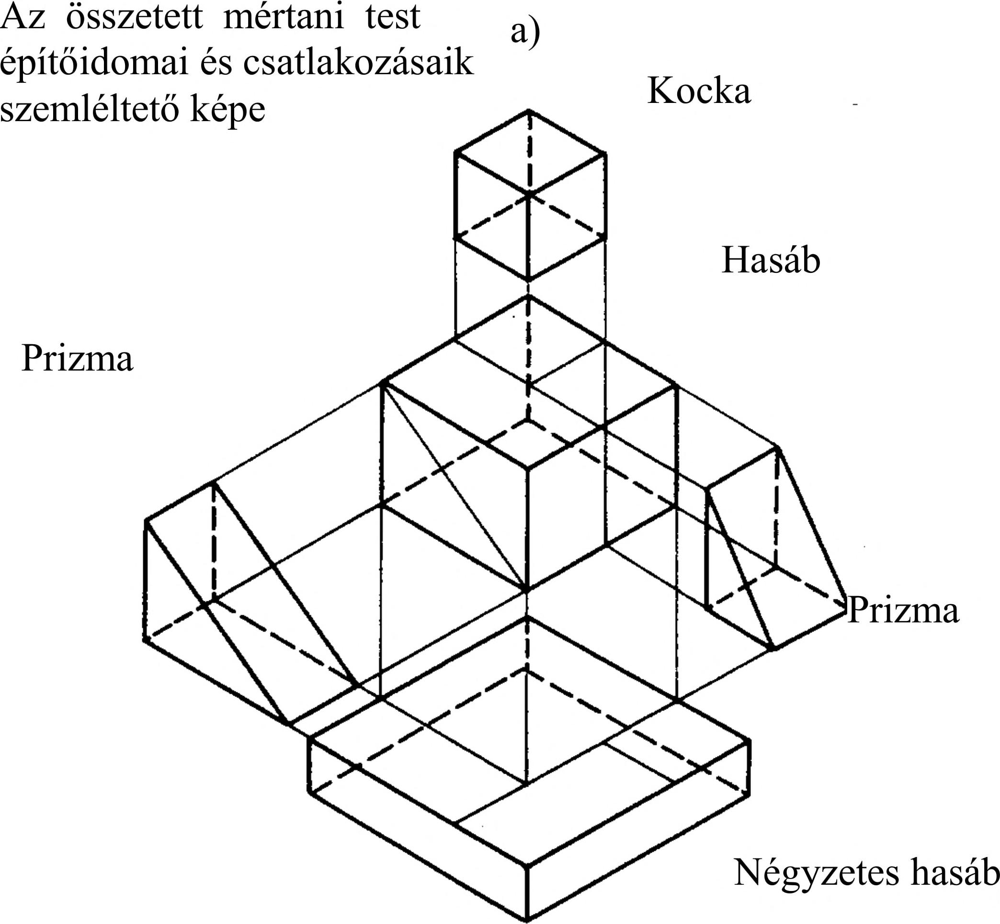
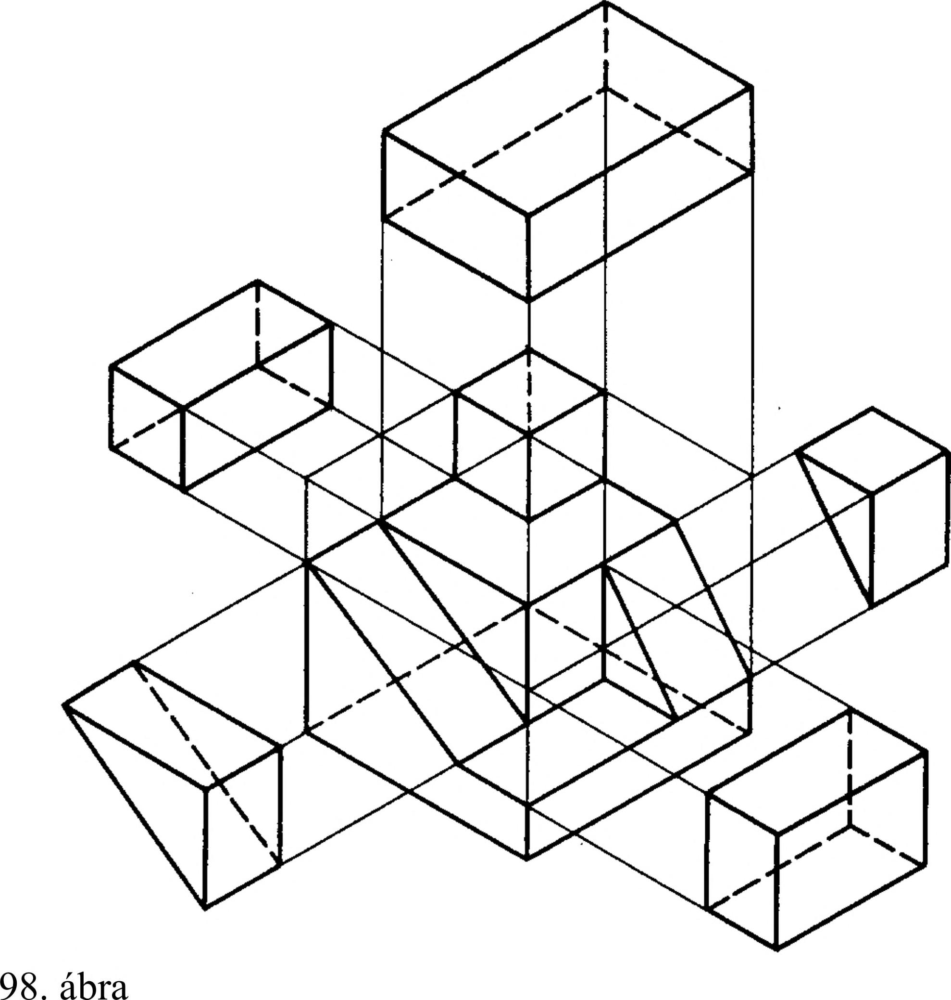

5. Ipari formák nézeti ábrázolása 5. Ipari formák nézeti ábrázolása A környezetünkben lévő tárgyak kialakításakor a tervező - fogalmi gondolkodásából adódóan - olyan mértani testekből építi fel a különböző tárgyakat, amelyeket tanulmányaink során mi is megismertünk. Tárgyaink általában nem egyszerű mértani testek, hanem ezek síkmetszéssel levágott darabjai, a daraboknak - mint építőelemeknek - az összeillesztésével kialakult új formák vagy a megismert mértani testek áthatási helyzetei. Az elemek összerakásával kaphatunk tömör - belső kialakítás nélküli - származtatott testeket, de kaphatunk geometriai mértani idomok elvételével üreges - belső kialakítású származtatott testeket is. 5.1. Összetett mértani test fogalma Az eddigi gondolatot követve, az összetett mértani test kialakítása olyan, hogy szerkezetében felismerhető az a tagoltság, amelynek segítségével elemei - mint építőidomok visszavezethetők az ismert mértani testek síkmetszéssel vagy áthatással kialakított darabjaira. Összetett mértani testekhez (alakzatokhoz) az építőidomok ismeretében eljuthatunk: 1 . összerakó vagy felépítő eljárással és 2. lebontó eljárással. Az összerakó vagy felépítő eljárásnál az összetett alakzatot elemeiből, építőidomaiból állítjuk össze. A 97. ábrán szemléltető képével látható összetett mértani test befoglaló méreteit megfigyelve, csonkolt kocka. A szemléltető kép alatt látható, hogy milyen építőidomokból és ezek milyen csatlakozásával hozható létre az összetett mértani test. Mai szóhasználattal szokás ezt robbantott ábrának nevezni, összhangban a kezelési, szerelési utasítások szemléltető ábráinak elnevezésével. A 98. ábrán az előző csonkolt kockát látjuk, a befoglaló forma - a kocka - lebontó eljárással való kialakításával. Az ábrán jól látható, hogy a kockából milyen szabályos elemek eltávolításával jutunk az összetett tömör mértani testhez. Üreges test elemzésekor az üreget anyag nélküli mértani testnek tekintjük. Ha az üreg összetett mértani test, akkor azt az előzőekhez hasonlóan elemeire bonthatjuk. Az összetett mértani testek és az azokat felépítő idomok tanulmányozása során végezhetünk: - felületelemzést és - idomelemzést, attól függően, hogy az elkészítési műveletek és technológia melyiket indokolja. Felületelemzés például a forgácsolt munkadarabokon indokolt, idomelemzéssel pedig a hegesztett munkadarabok felépítéséhez szükséges elemek alakját határozzuk meg. b) 27
 